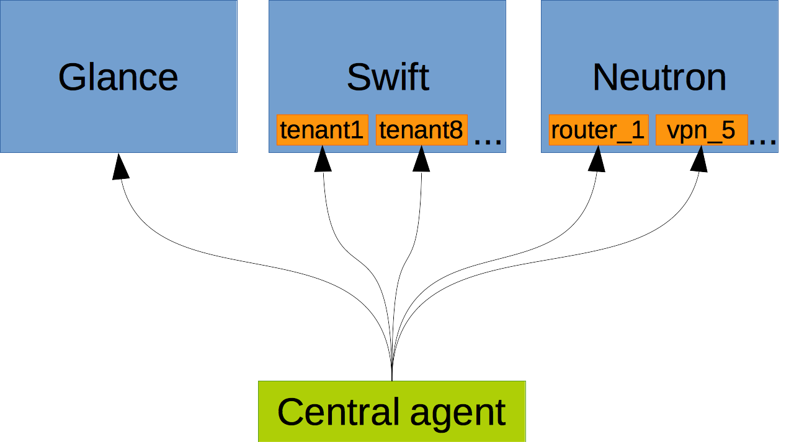
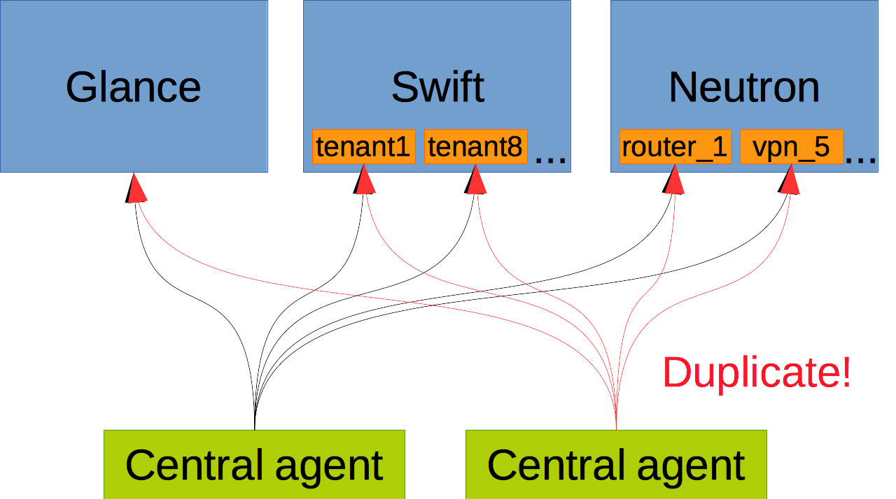
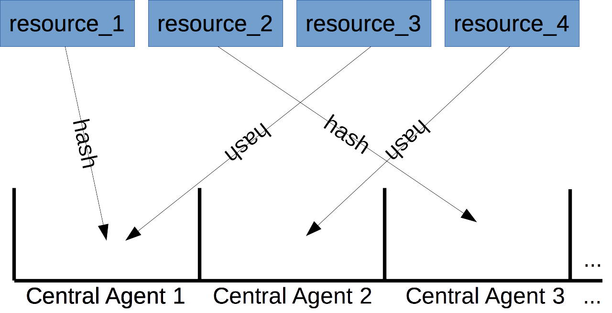
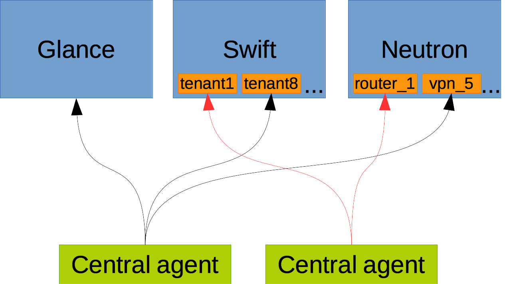

This post is about some of the work I did on the Ceilometer's Central Agent while working at Red Hat in the summer of 2014.
Ceilometer's Central Agent's job is polling. It polls VMs/resources/services/sensors... about their status or value.
But you don't want to have one Central Agent be the single point of failure, or perhaps you have so many resources that a single agent can't even handle them all in time. If you simply run another agent, they'll both poll everything and you'll get duplicate samples.
So in the Juno cycle, we set out to fix this by enabling Central Agents to figure out among themselves who polls what.
We could elect a leader among the running agents, which would then distribute the work among the group. The problem arises when a new agent is started or one of the agents fails. The leader has to reassign the work then, which comprises of taking some resources off some agents and assigning them to others, which can get complicated and error-prone very quickly.
Instead, we chose the simpler route by minimizing the amount of coordination between agents. All each agent needs in order to decide what to poll is the information about how many and which other Central Agents are currently up and running. Using that information it can then use a hash function to see if a particular resource is assigned to it or not.
Solution
From a high level perspective, we have a set of resources (items) which need to be polled by a set of agents (buckets). We then use hashing to compartmentalize the items (resources) into buckets (agents).
Each agent can do the hashing procedure by itself and so figures out which resources it needs to poll. All it needs for that is the information about which other Central Agents are currently up and running.
For more details about the design and implementation, see the blueprint and Eoghan Glynn's short presentation slides.